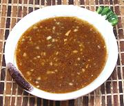

|
Vinegar Shrimp Paste DipPhilippine | ||||
| Makes: Effort: Sched: DoAhead: |
1/2 cup * 7 min Yes |
A typical Philippine dipping sauce, used with spring rolls, crisp fried items and roasted meats. Caution: This is formulated to Filipino tastes - it is very strong. | |||
|
4 2 2/3 2/3 1-1/2 1-1/2 1-1/2 |
T cl t t t T T |
Vinegar (1) Garlic Sugar Pepper, black Shrimp Paste (2) Fish Sauce (3) Lime Juice |
Make - (7 min)
|